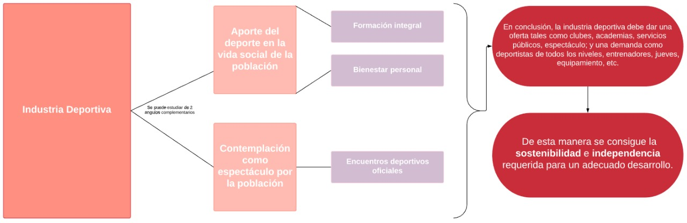
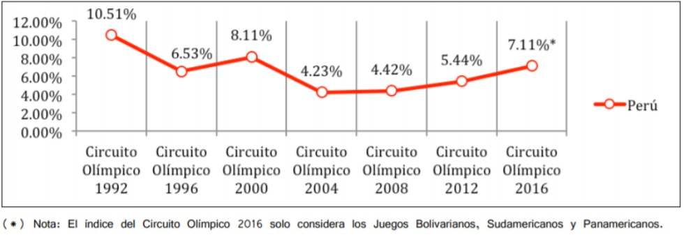
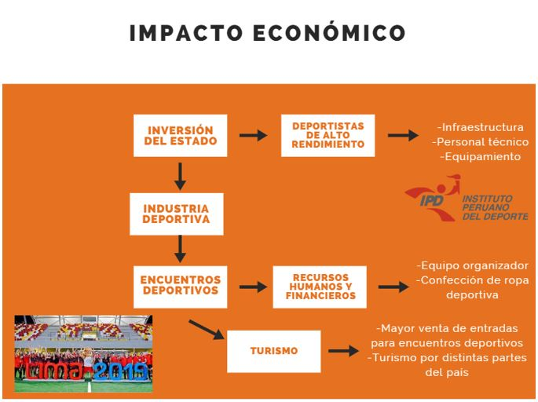
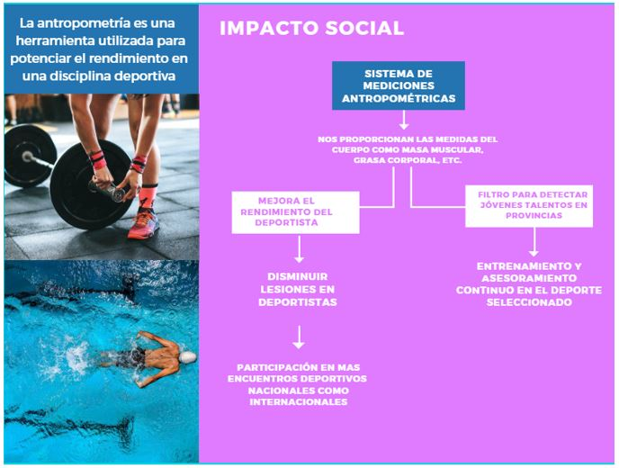
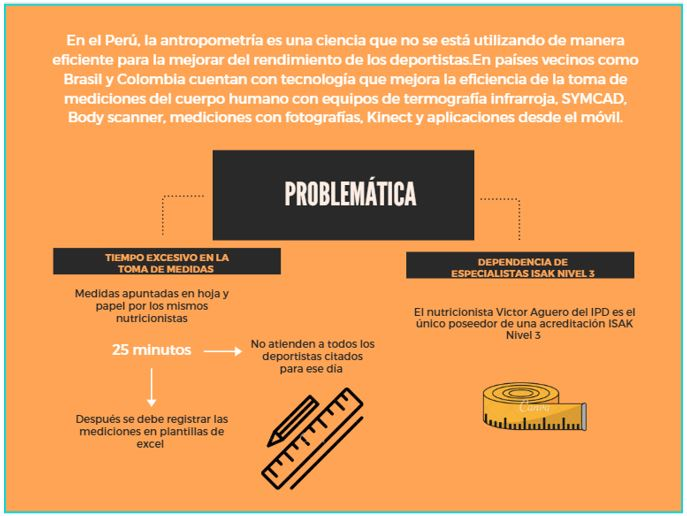
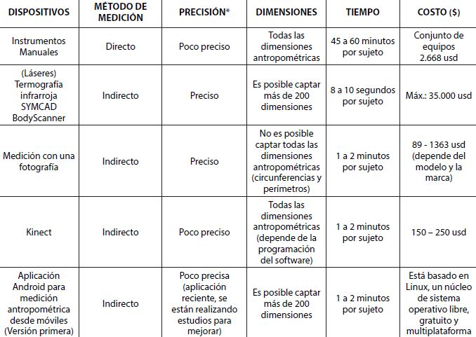

1. CONTEXTO ECONÓMICO
Para conseguir la sostenibilidad del deporte en el Perú debemos lograr que este sea autosostenible, esto es por que su desarrollo es permanente, es decir, está en constante desarrollo. Al lograr su autosostenibilidad, hacemos que este deje de depender de la inversión del estado en el deporte, y hacemos que su única dependencia sea al progreso de su misma industria, la industria deportiva.
Para ello, esto se puede estudiar de dos ángulos distintos que se complementan.

Esto se ha conseguido con el paso del tiempo, por ejemplo, consiguiendo incrementar un 2.88% el promedio de nuestra participación en juegos olímpicos desde 2004 al 2016. Aunque el hecho más evidente del incremento de la industria deportiva en el Perú ha sido si no hasta el presente año (2019) en el cual el Perú ha sido anfitrión de 3 certámenes deportivos a nivel internacional, estos fueron: El Rally Dakar, los Juegos Panamericanos y los Juegos Parapanamericanos.

Figura 1.El Rally Dakar, los Juegos Panamericanos y los Juegos Parapanamericanos.
Centrándome en estos dos últimos, como ya explique anteriormente los beneficios que le traen al país son numerosos, pero el principal será la cantidad de turistas que visitarán el Perú, los cuales fueron un aproximado de 75000, estos generarán aún más ingresos (Que se estiman fuesen 125 millones de dólares) desde la compra de entradas para los encuentros deportivos, como el turismo que realizarán en distintas partes del país.
Todos estos logros solo le dan aún más apoyo a la ya aprobada iniciativa para la creación del Ministerio de deporte, algo con lo que países vecinos tales como Chile y Brasil ya cuentan y Colombia que está próxima a crear.

2. CONTEXTO SOCIAL
En la actualidad cuando se habla de antropometría se refiere a una herramienta para potenciar el rendimiento de una disciplina deportiva. En muchos países, esta herramienta es fundamental para poder valorar y explotar la capacidad de respuesta de un atleta, para disminuir el riesgo de sufrir lesiones y para saber cómo está constituido su cuerpo, conociendo cuál es la proporción del peso que corresponde a la masa muscular y cuál a la grasa corporal, además también se usa para detectar jóvenes talentos para un deporte específico. Sin embargo, en el Perú, ésta herramienta aún no se utiliza como se debería, ya que en lo que respecta a la tecnología estamos muy por debajo de nuestros países vecinos, tales como Colombia y Brasil. En estos países, la antropometría se realiza con equipos de termografía infrarroja, SYMCAD, Body scanner, mediciones con fotografías, Kinect y aplicaciones desde el móvil, mientras que, en el Perú, aún se toman medidas con métodos convencionales, esto conlleva a mucho tiempo y errores.
Además, hay otros factores morfológicos y sociológicos implicados en el rendimiento deportivo. Por un lado, la carencia de un físico y de una complexión física adecuada a las exigencias del deporte hacen prácticamente imposible competir con los demás atletas de alto nivel. Por otro lado, las condiciones sociales y culturales condicionan a la práctica de algunas disciplinas deportivas. Ya que, en algunas regiones del Perú, se dan incentivos a los atletas que llegan a lograr algo, esto afecta motivacionalmente a estos atletas y puede ser positivo en muchos casos, mientras que en otros casos los resultados pueden ser adversos, puesto que al tratarse de una recompensa el atleta se puede poner nervioso y más si este atleta no cuenta el sustento económico notable.

3. PROBLEMÁTICA
En el Perú, la antropometría no es una ciencia que se está utilizando como debería, o mejor dicho, no es tan eficiente como debería de serlo. Como ya ha sido mencionado, países vecinos cuentan con tecnología que mejora la eficiencia de la toma de mediciones del cuerpo humano, cosa que en nuestro país no sucede.
Como se nos fue mencionado Victor Aguero, nutricionista del Instituto Peruano de Deporte (IPD), hay diversos problemas y complicaciones que tienen los antropometristas en la toma de mediciones, las cuales están relacionadas y serán explicadas a continuación.
Primero está la exactitud de las mediciones; existe la certificación Internacional en Kinantropometría llamada ISAK, que consta de 4 niveles que se dan debido a la cantidad de mediciones que el antropometrista es capaz de tomar con una alta precisión. En el Perú, Victor Aguero es el único poseedor de una acreditación ISAK Nivel 3; al ser el único con un nivel de precisión alto, se requiere de él para la toma de mediciones en atletas de alta competencia debido a la importancia que estos tienen. En consecuencia, no siempre se puede contar con él para la toma de mediciones, lo cual podría ocasionar fallos en estas.
En segundo lugar, está el factor tiempo, cosa que se relaciona con la primera complicación. La manera en que se registran las medidas mientras son tomadas es siendo apuntadas en una hoja usando un lápiz, y en muchos casos, por la misma persona que está haciendo las mediciones. Una vez estas mediciones son anotadas, posteriormente deben ser registradas en las plantillas pertinentes transcribiendolas con el computador. Este proceso de la toma de medidas y anotandolas puede llegar a tardar hasta un aproximado de 25 minutos por paciente, sin contar el tiempo que se tardará en ser transcritas al computador. Este tiempo que se toma por paciente provoca que no se pueda atender a muchos pacientes por día cómo se debería de hacer, sumandole a esto que al solo haber un antropometrista ISAK Nivel 3, es este quien debe hacer la mayoría de mediciones posibles a los deportistas.
Con estas complicaciones, es prácticamente inconcebible la elaboración de una guía de prácticas para control antropométrico, cuando estas medidas no se pueden tomar de forma eficiente y precisa en su totalidad.

4. PROBLEMA
“Tiempo excesivo y dependencia de especialistas ISAK nivel 3 en la toma de mediciones antropométricas de atletas de alta competencia en el IPD.”
5. BRECHAS TECNOLÓGICAS
Existen diferentes tecnologías usadas para la captación de datos antropométricos ya sean unidimensionales(1D), bidimensionales(2D) o tridimensionales(3D). Asimismo, tecnología para la forma en cómo se pueden obtener estos datos antropométricos. Los datos 1D permiten establecer el tamaño del cuerpo humano, pero no la forma, se usan instrumentos como: antropómetro, plicómetro, cinta antropométrica, pie de rey, etc. Los datos 2D consisten en siluetas o secciones corporales mientras que los 3D representan la superficie del cuerpo.
Los métodos de medición pueden ser directos o indirectos. En los directos se obtienen las dimensiones interactuando con el sujeto y haciendo uso principalmente de tecnología unidimensional (instrumentos manuales) o bidimensional, mientras que en los indirectos no hay una interacción con el sujeto y se trabaja con tecnología tridimensional (equipo de termografía infrarroja, SYMCAD, BODY SCANNER) o mediante medición con fotografías o medición con imágenes y movimiento (Kinect).
Para los estudios antropométricos que se realizan en el Perú se hace uso de la tecnología unidimensional mientras que la tecnología 3D es empleada en otros países como: USA (Size USA), Francia (Estudio antropométrico de la población francesa), Alemania (Size Germany), España (Estudio antropométrico de la población femenina en España) entre otros.
El uso de esta tecnología genera mayores ventajas para estos países respecto al nuestro. Como por ejemplo la influencia en el tiempo de medición por sujeto ya que son necesarios pocos segundos para explorar todo el cuerpo y realizar una gran variedad de mediciones, esto también influye en la población ya que se puede medir a un mayor porcentaje. Además de que existe una precisión y fidelidad en los resultados obtenidos por estos dispositivos. Debido a estas ventajas estos países, en especial USA, presentan una mayor cantidad de estudios e informes actualizados que están relacionados a la antropometría de su población.
A continuación, se muestra un cuadro comparativo entre los dispositivos de medición antropométrica.

Figura 1. Cuadro comparativo de dispositivos de medición antropométrica.(Nariño Lescay, R.; Alonso Becerra, A.; Hernández González, A.
(2016). Antropometría. Análisis comparativo de las tecnologías
para la captación de las dimensiones antropométricas.2019,de revista EIA)